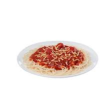

Spaghetti

In some Black households, fried chicken served with spaghetti is not uncommon. In fact the pairing is a crowd favorite at celebrations like cookouts,
baby showers, and even birthdays. Another common pairing is fried fish and spaghetti (maybe Jollibee will consider expanding their menu!).
Jollibee's slightly sweet spaghetti is nothing to write home about; It resembles the spaghetti you'd get in a school cafeteria. I didn't expect much from fast food spaghetti,
but it gets the job done. Unfortunately in the U.S. locations, at least for the time being, palabok is not offered as a side.
- Vegetable oil
- 1/2 lb (227g) smoked ham
- 5 homemade hot dogs, diced into coins
- 5 cloves garlic, minced
- 1/2 cup (118g) tomato paste
- 1.5 cup (355ml) chicken or pork stock
- 24 oz (680g) can of crushed tomatoes
- 1/4 cup (54g) granulated sugar
- Salt to taste
- 1lb (474g) dried spaghetti
- Grated cheddar cheese for garnish
- In a sauce pot, add enough vegetable oil to coat the bottom of the pan, and heat over medium heat; once the oil is hot, add ham and sausage, cook until starting to brown,
and lower heat to medium.
- In a sauce pot, add enough vegetable oil to coat the bottom of the pan, and heat over medium heat; once the oil is hot, add ham and sausage, cook until starting to brown,
and lower heat to medium.
- In a sauce pot, add enough vegetable oil to coat the bottom of the pan, and heat over medium heat; once the oil is hot, add ham and sausage, cook until starting to brown,
and lower heat to medium.
- In a sauce pot, add enough vegetable oil to coat the bottom of the pan, and heat over medium heat; once the oil is hot, add ham and sausage, cook until starting to brown, and lower heat to medium.